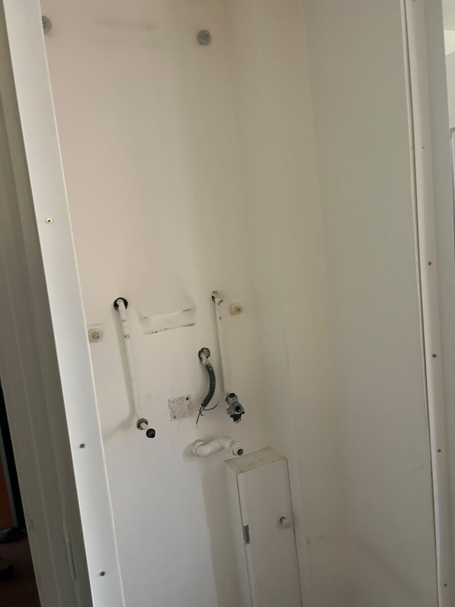
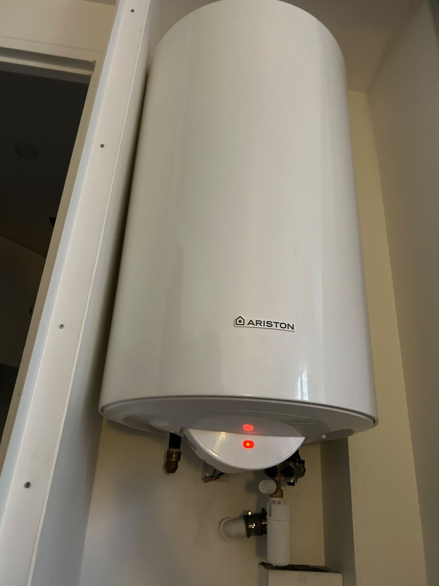

Électricien à Saint-Denis (93200) — Dépannage 24h/24
À Saint-Denis, on nous appelle surtout pour un tableau qui disjoncte et ne veut plus se réarmer. Nous y sommes intervenus plusieurs fois cet automne : un câble fondu qui coupait toutes les prises, puis un chauffe-eau en panne qui faisait sauter le tableau. Déplacement 65€ TTC, prix annoncé avant de commencer, garantie décennale ORUS.
Sur mobile : appui direct pour appelerNovembre 2026 : le chauffe-eau faisait disjoncter tout le tableau


Le client avait des coupures répétées : le tableau électrique disjonctait, et la cause n'était pas visible. Nous avons d'abord cherché la cause, avec des mesures et des contrôles. Le coupable était le chauffe-eau électrique, défaillant : c'est lui qui provoquait les disjonctions.
Le devis a été signé le jour même, et deux jours plus tard le chauffe-eau était remplacé :
- Dépose et évacuation de l'ancien chauffe-eau
- Pose d'un chauffe-eau électrique neuf de la même marque, Ariston, en 150 litres, avec un groupe de sécurité neuf
- Raccordement à l'eau et à l'électricité, mise en service et contrôle selon la norme NF C 15-100
Le tableau saute la nuit, ou quand l'eau chaude se remet à chauffer ? C'est souvent le signe d'un chauffe-eau en cause. Le bon réflexe : couper son disjoncteur au tableau, puis réarmer le reste. Si tout tient, le chauffe-eau est suspect, et il faut le faire mesurer.
Octobre 2026 : un câble fondu coupait toutes les prises
Dans un autre logement de Saint-Denis, plus aucune prise ne fonctionnait. Le diagnostic a montré un câble électrique qui avait fondu à cause d'une surcharge : trop d'appareils puissants sur la même ligne. Le câble abîmé créait un court-circuit sur l'ensemble des prises.
Nous avons remplacé le câble fondu, remis le tableau en service dans l'ordre, puis vérifié chaque circuit (éclairage, prises, électroménager) et testé les interrupteurs différentiels avant de partir. Tout a été réglé en une seule intervention.
Un câble qui a chauffé ne se répare pas en le rebranchant : l'isolant est cuit sur toute la partie qui a chauffé. Si une prise noircit, sent le brûlé ou chauffe, voir notre guide prise qui chauffe.
Nos prix à Saint-Denis
Le déplacement à Saint-Denis est de 65 € TTC. Un diagnostic rapide démarre à 115 € TTC, et une recherche de panne plus longue est à 195 € TTC. Pour un remplacement, comme le chauffe-eau, le prix est donné par un devis écrit avant les travaux. Tous les détails sont sur notre page tarifs.
Nous intervenons aussi dans le reste de la Seine-Saint-Denis, par exemple à Bondy : voir notre page électricien Seine-Saint-Denis (93).
Questions fréquentes — Saint-Denis
Q. Combien coûte le déplacement de SINELEC à Saint-Denis ?
65 € TTC (petite couronne). Le prix de l'intervention est annoncé avant de commencer.
Q. SINELEC est-il déjà intervenu à Saint-Denis ?
Oui, plusieurs fois : un câble fondu qui mettait toutes les prises en court-circuit, remplacé le jour même, et un chauffe-eau électrique en panne qui faisait disjoncter le tableau, remplacé par un chauffe-eau neuf de 150 litres.
Q. Un chauffe-eau peut-il faire sauter le disjoncteur ?
Oui. Quand la résistance ou l'isolation d'un chauffe-eau électrique est abîmée, le courant fuit vers la terre et l'interrupteur différentiel coupe, parfois seulement quand le chauffe-eau se met à chauffer, la nuit en heures creuses. Il faut mesurer pour savoir s'il se répare ou s'il faut le remplacer.
Q. Que faire si une prise ou un câble sent le brûlé ?
Coupez le disjoncteur général, ne réarmez pas, débranchez les appareils sur cette ligne et appelez un électricien. Un câble qui a chauffé doit être remplacé, pas seulement rebranché.